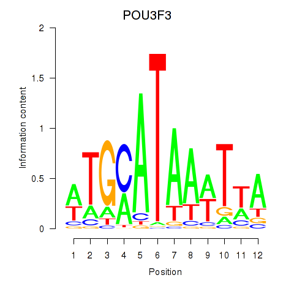
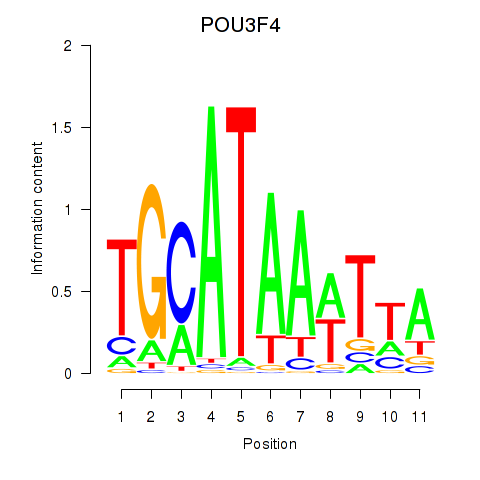

Motif ID: POU3F3_POU3F4
Z-value: 0.515


Transcription factors associated with POU3F3_POU3F4:
| Gene Symbol | Entrez ID | Gene Name |
|---|---|---|
| POU3F3 | ENSG00000198914.2 | POU3F3 |
| POU3F4 | ENSG00000196767.4 | POU3F4 |
![](http://string-db.org/api/image/network?network_flavor=evidence&limit=0&species=9606&caller_identity=MARA&identifiers=9606.ENSP00000358966%0D9606.ENSP00000306894%0D9606.ENSP00000379895%0D9606.ENSP00000311605%0D9606.ENSP00000425352%0D9606.ENSP00000421736%0D9606.ENSP00000376652%0D9606.ENSP00000356437%0D9606.ENSP00000317580%0D9606.ENSP00000262809%0D9606.ENSP00000362629%0D9606.ENSP00000368790%0D9606.ENSP00000360054%0D9606.ENSP00000283256%0D9606.ENSP00000306637%0D9606.ENSP00000370109%0D9606.ENSP00000057513%0D9606.ENSP00000249075%0D9606.ENSP00000381272%0D9606.ENSP00000331736%0D9606.ENSP00000301458%0D9606.ENSP00000257694%0D9606.ENSP00000315768%0D9606.ENSP00000293872%0D9606.ENSP00000339328%0D9606.ENSP00000407193%0D9606.ENSP00000283268%0D9606.ENSP00000305055%0D9606.ENSP00000265431%0D9606.ENSP00000427555%0D9606.ENSP00000244869%0D9606.ENSP00000355156%0D9606.ENSP00000343172%0D9606.ENSP00000378306%0D9606.ENSP00000403932%0D9606.ENSP00000431748%0D9606.ENSP00000303028%0D9606.ENSP00000341944%0D9606.ENSP00000336984%0D9606.ENSP00000375470%0D9606.ENSP00000220058%0D9606.ENSP00000274547%0D9606.ENSP00000357861%0D9606.ENSP00000328069%0D9606.ENSP00000265404%0D9606.ENSP00000326225%0D9606.ENSP00000354270%0D9606.ENSP00000366093%0D9606.ENSP00000311030%0D9606.ENSP00000410759%0D9606.ENSP00000302790%0D9606.ENSP00000381253%0D9606.ENSP00000320376%0D9606.ENSP00000313324%0D9606.ENSP00000450895%0D9606.ENSP00000331574%0D9606.ENSP00000330190%0D9606.ENSP00000386960%0D9606.ENSP00000332772%0D9606.ENSP00000260228%0D9606.ENSP00000300086%0D9606.ENSP00000402038%0D9606.ENSP00000263665%0D9606.ENSP00000386167%0D9606.ENSP00000373684%0D9606.ENSP00000337393%0D9606.ENSP00000359928%0D9606.ENSP00000355361%0D9606.ENSP00000333496%0D9606.ENSP00000341138%0D9606.ENSP00000319635%0D9606.ENSP00000261776%0D9606.ENSP00000354923%0D9606.ENSP00000471758%0D9606.ENSP00000359768%0D9606.ENSP00000387593%0D9606.ENSP00000345752%0D9606.ENSP00000337816%0D9606.ENSP00000244061%0D9606.ENSP00000402515%0D9606.ENSP00000371789%0D9606.ENSP00000342121%0D9606.ENSP00000381214%0D9606.ENSP00000313885%0D9606.ENSP00000331766%0D9606.ENSP00000216044%0D9606.ENSP00000344193%0D9606.ENSP00000352540%0D9606.ENSP00000288602%0D9606.ENSP00000328144%0D9606.ENSP00000359740%0D9606.ENSP00000265440%0D9606.ENSP00000411552%0D9606.ENSP00000382260%0D9606.ENSP00000220584%0D9606.ENSP00000251643%0D9606.ENSP00000320232%0D9606.ENSP00000400882%0D9606.ENSP00000329668%0D9606.ENSP00000470243%0D9606.ENSP00000458657)
{kind=link}
{kind=link}
{kind=link}
{kind=link}
Top targets:
Gene overrepresentation in biological_process category:
| Log-likelihood per target | Total log-likelihood | Term | Description |
|---|---|---|---|
| 0.2 | 0.7 | GO:0044314 | protein K27-linked ubiquitination(GO:0044314) |
| 0.1 | 0.4 | GO:0046338 | phosphatidylethanolamine catabolic process(GO:0046338) |
| 0.1 | 0.3 | GO:1903980 | negative regulation of macrophage colony-stimulating factor signaling pathway(GO:1902227) negative regulation of response to macrophage colony-stimulating factor(GO:1903970) negative regulation of cellular response to macrophage colony-stimulating factor stimulus(GO:1903973) positive regulation of microglial cell activation(GO:1903980) |
| 0.0 | 0.2 | GO:0042796 | snRNA transcription from RNA polymerase III promoter(GO:0042796) |
| 0.0 | 0.2 | GO:0010730 | negative regulation of hydrogen peroxide biosynthetic process(GO:0010730) positive regulation of skeletal muscle satellite cell proliferation(GO:1902724) positive regulation of growth factor dependent skeletal muscle satellite cell proliferation(GO:1902728) |
| 0.0 | 0.3 | GO:0031642 | negative regulation of myelination(GO:0031642) |
| 0.0 | 0.1 | GO:2000616 | negative regulation of histone H3-K9 acetylation(GO:2000616) |
| 0.0 | 0.2 | GO:0008204 | ergosterol biosynthetic process(GO:0006696) ergosterol metabolic process(GO:0008204) |
| 0.0 | 0.1 | GO:0070173 | regulation of enamel mineralization(GO:0070173) |
| 0.0 | 0.1 | GO:0021650 | vestibulocochlear nerve formation(GO:0021650) |
| 0.0 | 0.1 | GO:0042700 | luteinizing hormone signaling pathway(GO:0042700) |
| 0.0 | 0.3 | GO:0001915 | negative regulation of T cell mediated cytotoxicity(GO:0001915) |
| 0.0 | 0.1 | GO:0038112 | interleukin-8-mediated signaling pathway(GO:0038112) |
| 0.0 | 0.2 | GO:0038195 | urokinase plasminogen activator signaling pathway(GO:0038195) |
| 0.0 | 0.2 | GO:0035881 | amacrine cell differentiation(GO:0035881) |
| 0.0 | 0.1 | GO:0060708 | spongiotrophoblast differentiation(GO:0060708) |
| 0.0 | 0.1 | GO:0031296 | B cell costimulation(GO:0031296) |
| 0.0 | 0.1 | GO:0021797 | forebrain anterior/posterior pattern specification(GO:0021797) |
| 0.0 | 0.1 | GO:0006601 | creatine biosynthetic process(GO:0006601) |
| 0.0 | 0.1 | GO:0048239 | negative regulation of DNA recombination at telomere(GO:0048239) regulation of DNA recombination at telomere(GO:0072695) |
| 0.0 | 0.2 | GO:0000395 | mRNA 5'-splice site recognition(GO:0000395) |
| 0.0 | 0.1 | GO:2000301 | negative regulation of synaptic vesicle exocytosis(GO:2000301) |
| 0.0 | 0.2 | GO:0002175 | protein localization to paranode region of axon(GO:0002175) |
| 0.0 | 0.1 | GO:0000379 | tRNA-type intron splice site recognition and cleavage(GO:0000379) |
| 0.0 | 0.1 | GO:0034343 | type III interferon production(GO:0034343) regulation of type III interferon production(GO:0034344) positive regulation of interferon-alpha biosynthetic process(GO:0045356) |
| 0.0 | 0.1 | GO:0036371 | protein localization to T-tubule(GO:0036371) |
| 0.0 | 0.1 | GO:0051177 | meiotic sister chromatid cohesion(GO:0051177) |
| 0.0 | 0.1 | GO:0035502 | metanephric part of ureteric bud development(GO:0035502) |
| 0.0 | 0.2 | GO:1902746 | regulation of lens fiber cell differentiation(GO:1902746) |
| 0.0 | 0.1 | GO:0098942 | cytoskeletal matrix organization at active zone(GO:0048789) neurexin clustering involved in presynaptic membrane assembly(GO:0097115) retrograde trans-synaptic signaling by trans-synaptic protein complex(GO:0098942) |
| 0.0 | 0.1 | GO:0086046 | membrane depolarization during SA node cell action potential(GO:0086046) |
| 0.0 | 0.7 | GO:0007205 | protein kinase C-activating G-protein coupled receptor signaling pathway(GO:0007205) |
| 0.0 | 0.0 | GO:0006533 | aspartate catabolic process(GO:0006533) |
| 0.0 | 0.1 | GO:1900864 | mitochondrial tRNA modification(GO:0070900) mitochondrial RNA modification(GO:1900864) |
| 0.0 | 0.1 | GO:1902498 | regulation of protein autoubiquitination(GO:1902498) |
Gene overrepresentation in cellular_component category:
| Log-likelihood per target | Total log-likelihood | Term | Description |
|---|---|---|---|
| 0.0 | 0.3 | GO:0005955 | calcineurin complex(GO:0005955) |
| 0.0 | 0.1 | GO:0043235 | receptor complex(GO:0043235) |
| 0.0 | 0.1 | GO:0035032 | phosphatidylinositol 3-kinase complex, class III(GO:0035032) |
| 0.0 | 0.1 | GO:0071006 | U2-type catalytic step 1 spliceosome(GO:0071006) |
| 0.0 | 0.3 | GO:0000177 | cytoplasmic exosome (RNase complex)(GO:0000177) |
| 0.0 | 0.1 | GO:0000214 | tRNA-intron endonuclease complex(GO:0000214) |
| 0.0 | 0.3 | GO:0035327 | transcriptionally active chromatin(GO:0035327) |
| 0.0 | 0.0 | GO:1990423 | RZZ complex(GO:1990423) |
| 0.0 | 0.0 | GO:0097224 | sperm connecting piece(GO:0097224) |
Gene overrepresentation in molecular_function category:
| Log-likelihood per target | Total log-likelihood | Term | Description |
|---|---|---|---|
| 0.0 | 0.2 | GO:0051996 | farnesyl-diphosphate farnesyltransferase activity(GO:0004310) squalene synthase activity(GO:0051996) |
| 0.0 | 0.3 | GO:0005157 | macrophage colony-stimulating factor receptor binding(GO:0005157) |
| 0.0 | 0.1 | GO:0005146 | leukemia inhibitory factor receptor binding(GO:0005146) |
| 0.0 | 0.1 | GO:0015235 | cobalamin transporter activity(GO:0015235) |
| 0.0 | 0.3 | GO:0030346 | protein phosphatase 2B binding(GO:0030346) |
| 0.0 | 0.7 | GO:0004143 | diacylglycerol kinase activity(GO:0004143) |
| 0.0 | 0.4 | GO:0047499 | calcium-independent phospholipase A2 activity(GO:0047499) |
| 0.0 | 0.2 | GO:0030377 | urokinase plasminogen activator receptor activity(GO:0030377) |
| 0.0 | 0.1 | GO:0015067 | amidinotransferase activity(GO:0015067) glycine amidinotransferase activity(GO:0015068) |
| 0.0 | 0.2 | GO:0050733 | RS domain binding(GO:0050733) |
| 0.0 | 0.2 | GO:0004522 | ribonuclease A activity(GO:0004522) |
| 0.0 | 0.1 | GO:0004918 | interleukin-8 receptor activity(GO:0004918) |
| 0.0 | 0.1 | GO:0048101 | calcium- and calmodulin-regulated 3',5'-cyclic-GMP phosphodiesterase activity(GO:0048101) |
| 0.0 | 0.1 | GO:0008386 | cholesterol monooxygenase (side-chain-cleaving) activity(GO:0008386) |
| 0.0 | 0.2 | GO:0031730 | CCR5 chemokine receptor binding(GO:0031730) |
| 0.0 | 0.3 | GO:0052629 | phosphatidylinositol-3,5-bisphosphate 3-phosphatase activity(GO:0052629) |
| 0.0 | 0.1 | GO:0005499 | vitamin D binding(GO:0005499) |
| 0.0 | 0.1 | GO:0003747 | translation release factor activity(GO:0003747) translation termination factor activity(GO:0008079) |
| 0.0 | 0.1 | GO:0071987 | WD40-repeat domain binding(GO:0071987) |
| 0.0 | 0.2 | GO:0031013 | troponin I binding(GO:0031013) |
| 0.0 | 0.1 | GO:0016404 | 15-hydroxyprostaglandin dehydrogenase (NAD+) activity(GO:0016404) |
| 0.0 | 0.1 | GO:0005237 | inhibitory extracellular ligand-gated ion channel activity(GO:0005237) |
| 0.0 | 0.0 | GO:0033858 | N-acetylgalactosamine kinase activity(GO:0033858) |
| 0.0 | 0.1 | GO:0005250 | A-type (transient outward) potassium channel activity(GO:0005250) |
| 0.0 | 0.1 | GO:0032184 | SUMO polymer binding(GO:0032184) |
| 0.0 | 0.2 | GO:0033691 | sialic acid binding(GO:0033691) |
| 0.0 | 0.2 | GO:0070053 | thrombospondin receptor activity(GO:0070053) |
| 0.0 | 0.2 | GO:0097100 | supercoiled DNA binding(GO:0097100) |
| 0.0 | 0.2 | GO:0008430 | selenium binding(GO:0008430) |
| 0.0 | 0.1 | GO:0061665 | SUMO ligase activity(GO:0061665) |
| 0.0 | 0.1 | GO:0004594 | pantothenate kinase activity(GO:0004594) |
Gene overrepresentation in C2:CP category:
| Log-likelihood per target | Total log-likelihood | Term | Description |
|---|---|---|---|
| 0.0 | 0.3 | PID_KIT_PATHWAY | Signaling events mediated by Stem cell factor receptor (c-Kit) |
Gene overrepresentation in C2:CP:REACTOME category:
| Log-likelihood per target | Total log-likelihood | Term | Description |
|---|---|---|---|
| 0.0 | 0.4 | REACTOME_SYNTHESIS_OF_PIPS_AT_THE_LATE_ENDOSOME_MEMBRANE | Genes involved in Synthesis of PIPs at the late endosome membrane |
| 0.0 | 0.2 | REACTOME_APOBEC3G_MEDIATED_RESISTANCE_TO_HIV1_INFECTION | Genes involved in APOBEC3G mediated resistance to HIV-1 infection |
| 0.0 | 0.7 | REACTOME_EFFECTS_OF_PIP2_HYDROLYSIS | Genes involved in Effects of PIP2 hydrolysis |
| 0.0 | 0.4 | REACTOME_ACYL_CHAIN_REMODELLING_OF_PE | Genes involved in Acyl chain remodelling of PE |
|
|
|
|